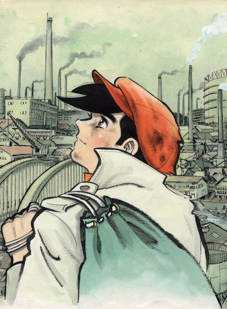
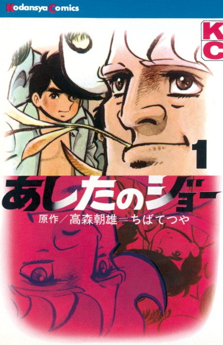

Anime
Manga1970 · Action, Drama, Slice of Life
Tomorrow's Joe
あしたのジョー
AniList8.1
Animeter—
2 seasons126 ep
MangaDone
2 seasons, 126 episodes
In airing order. Episode numbers on this site count straight through every season, so season 2 starts at episode 80.
1
1970 · TV
Tomorrow's Joe
Episodes1–7979 ep
2
1980 · TV
Tomorrow's Joe 2
Episodes80–12647 ep
Sources: AniList